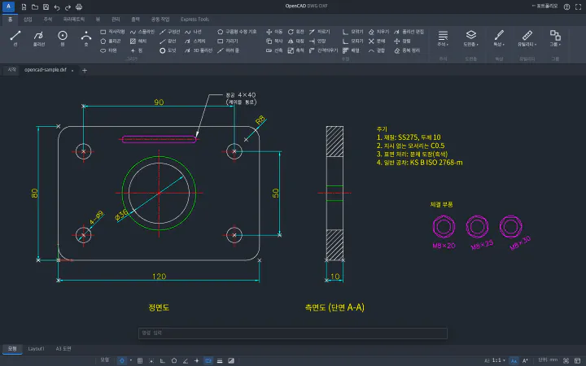
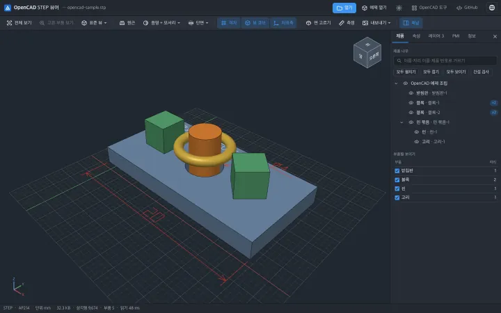
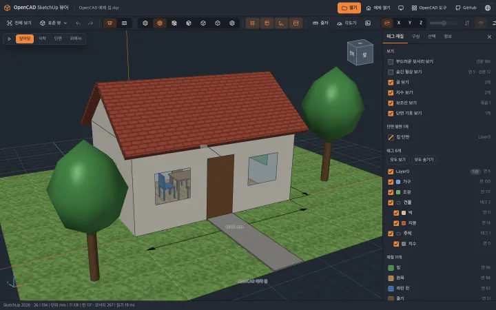
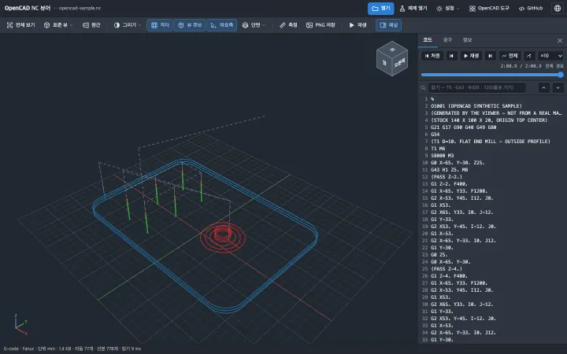

Vorhergesagte Ergebnisse nach Flächen gruppiert in Tasche, Senkbohrung, Loch, Stufe und Verrundung.
Das eigentliche Projekt für diesen Workflow- 1Tasche9 Flächen
- 2Senken2 Plätze
- 3Durchdringendes Loch4 Plätze
- 4Stufe2 Flächen
- 5AbrundungR12 · 4 Plätze
- Zeichnungen
- A-01
- Name
- Tasche · Stufenblock
- Schritt
- 02 Merkmalserkennung
- Einheiten
- mm
- Autor
- Gyu-tae Kim
- Aktualisiert

Teamprodukte, bei denen die Konstruktion zu Stücklisten, Zeichnungen und Bearbeitungsdateien führt.
- Möbelkonfigurator erstellen
- Zeichnungen und Aufträge
- Connector-Ausgabe
- Produktionseingabe
Dies sind drei Projekte, die Geometrien erkennen, modifizieren und in Daten für die Verwendung in der Fabrik konvertieren. Ich habe meine direkte Rolle, Probleme und Lösungen sowie die Implementierungsergebnisse für jeden Fall zusammengefasst.
 ProduktbildschirmKI, die 3D-Modelle liest und Verarbeitungsstrategien entwirftWir haben alle Prozesse von der Bearbeitungsmerkmalserkennung bis zur Fusion CAM-Prozesserstellung und Ergebnisverifizierung miteinander verknüpft.Verantwortliche PersonIntegration von Formanalyse, Bearbeitungsstrategie und Fusion entwickelt. Für den digitalen Zwilling war ich ausschließlich für die Ergebnisvisualisierung verantwortlich.9 TypenBearbeitungsmerkmal · Enthält Rohmaterial
ProduktbildschirmKI, die 3D-Modelle liest und Verarbeitungsstrategien entwirftWir haben alle Prozesse von der Bearbeitungsmerkmalserkennung bis zur Fusion CAM-Prozesserstellung und Ergebnisverifizierung miteinander verknüpft.Verantwortliche PersonIntegration von Formanalyse, Bearbeitungsstrategie und Fusion entwickelt. Für den digitalen Zwilling war ich ausschließlich für die Ergebnisvisualisierung verantwortlich.9 TypenBearbeitungsmerkmal · Enthält Rohmaterial Studien-RenderingKI zur Erkennung von Möbelpaneelen und Berechnung von GrößenänderungenDurch die Klassifizierung von Paneelen und die Berechnung von Größenänderungen mithilfe von Koeffizientenformeln wird die Echtzeit-Planung und -Bestellung im Web ermöglicht.Verantwortliche PersonIm Team war ich für die KI zur Paneelerkennung und die Erstellung von Koeffizientenformeln zur Berechnung von Änderungen der Paneelgröße und -position verantwortlich.15 TypenVon der KI erkannte Paneltypen
Studien-RenderingKI zur Erkennung von Möbelpaneelen und Berechnung von GrößenänderungenDurch die Klassifizierung von Paneelen und die Berechnung von Größenänderungen mithilfe von Koeffizientenformeln wird die Echtzeit-Planung und -Bestellung im Web ermöglicht.Verantwortliche PersonIm Team war ich für die KI zur Paneelerkennung und die Erstellung von Koeffizientenformeln zur Berechnung von Änderungen der Paneelgröße und -position verantwortlich.15 TypenVon der KI erkannte Paneltypen ProduktbildschirmWedraw Pro, vom Möbeldesign bis zur ProduktionDer SketchUp-Entwurf wurde als Stückliste, Beschriftung, Zeichnung und Verarbeitungscode ausgegeben und im Web überprüft.Verantwortliche PersonIm Team leitete ich die erste Entwicklung der Ausgabe der Fertigungsdaten, der Produktionseingabe, der Zeichnungen und der Aufträge.4 TypenStückliste, Etikett, Verarbeitungszeichnung, Verarbeitungscode-Ausgabe
ProduktbildschirmWedraw Pro, vom Möbeldesign bis zur ProduktionDer SketchUp-Entwurf wurde als Stückliste, Beschriftung, Zeichnung und Verarbeitungscode ausgegeben und im Web überprüft.Verantwortliche PersonIm Team leitete ich die erste Entwicklung der Ausgabe der Fertigungsdaten, der Produktionseingabe, der Zeichnungen und der Aufträge.4 TypenStückliste, Etikett, Verarbeitungszeichnung, Verarbeitungscode-Ausgabe
Projektarchiv
Entwicklungsarbeiten, die ich neben den Hauptprojekten übernommen habe.
OpenCAD-Werkzeuge nach Dateiformat kostenlos auswählen
Alle Werkzeuge und BenutzerhandbuchIch entwickle kostenlose Werkzeuge zum Öffnen, Bearbeiten und Speichern von DWG/DXF-Zeichnungen im 2D-CAD sowie zum Anzeigen von STEP-/SketchUp-Modellen und NC-Werkzeugwegen. Die persönlichen Open-Source-Projekte laufen ohne Installation; auch die Entwicklung des gemeinsamen 3D-Kerns wird vorgestellt.

OpenCAD DWG·DXFKostenloses 2D-CAD zum Öffnen, Erstellen, Bearbeiten und Speichern von DWG/DXF-Zeichnungen. Auch Abstände, Winkel und Flächen lassen sich messen und als PDF, PNG oder SVG ausgeben..dwg.dxf
OpenCAD STEP ViewerDies ist ein kostenloser Viewer, der STEP·STP 3D CAD-Dateien ohne Installation im Browser öffnet. Sie können die Baugruppenstruktur und die Teilefarbe überprüfen, den Abstand zwischen zwei Punkten messen oder sie als PNG speichern..step.stp.p21
OpenCAD SketchUp ViewerDies ist ein kostenloser Viewer, der in SketchUp 2021–2026 gespeicherte SKP-Dateien in Ihrem Browser öffnet. Sie können die Entfernung messen, indem Sie sich Tags/Materialien und Gruppen/Komponenten ansehen..skp
OpenCAD NC ViewerEin kostenloser NC-Viewer zum Überprüfen von 3D-Werkzeugwegen von G-Code·Heidenhain-Klartext·woodWOP-MPR-Dateien. Sie können die Bearbeitungssequenz nachvollziehen, indem Sie Codezeilen und Bewegungen zusammenfügen..nc.gcode.ngc.h.mpr
Im Rahmen meiner Bachelorarbeit habe ich mich mit Reinforcement Learning, Kleidungsklassifizierung und virtueller Anprobe beschäftigt. Ich stelle die von mir selbst implementierten Teile vor, basierend auf wissenschaftlichen Arbeiten und öffentlich zugänglichen Modellen, sowie die aufgetretenen Probleme und die Ergebnisse meiner Experimente. Das Bild unten zeigt ein Beispiel für die erneute Ausführung des öffentlich zugänglichen Codes.
 Graphmodell zur Erstellung eines TSP-Pfades mit Reinforcement LearningWir haben ein Suchprogramm implementiert, das Städte als Graph darstellt und Reinforcement Learning verwendet, um Städte für den Pfad auszuwählen.Verantwortliche PersonVernetzte Graphumgebung und Lernschleifen mit visuellen Einfügeregeln.Schritt 2KI-Stadtauswahl + heuristische Routeneinfügung
Graphmodell zur Erstellung eines TSP-Pfades mit Reinforcement LearningWir haben ein Suchprogramm implementiert, das Städte als Graph darstellt und Reinforcement Learning verwendet, um Städte für den Pfad auszuwählen.Verantwortliche PersonVernetzte Graphumgebung und Lernschleifen mit visuellen Einfügeregeln.Schritt 2KI-Stadtauswahl + heuristische Routeneinfügung Ein Modell zur Klassifizierung von Kleidungsfotos mit ResNetWir haben gelernt, K-Fashion-Kleidungsfotos in Kleider, Oberbekleidung, Hosen und Oberteile zu unterteilen, und haben Fehler für jede Klasse analysiert.Verantwortliche PersonTransferlernen, Klassen-Sampling und Konfusionsmatrix-Auswertung implementiert.4 TypenKlassifizierung: Kleider · Oberbekleidung · Hosen · Oberteile
Ein Modell zur Klassifizierung von Kleidungsfotos mit ResNetWir haben gelernt, K-Fashion-Kleidungsfotos in Kleider, Oberbekleidung, Hosen und Oberteile zu unterteilen, und haben Fehler für jede Klasse analysiert.Verantwortliche PersonTransferlernen, Klassen-Sampling und Konfusionsmatrix-Auswertung implementiert.4 TypenKlassifizierung: Kleider · Oberbekleidung · Hosen · Oberteile Virtuelle Anprobe-App für PorträtsWir haben in der Android-App einen Ablauf erstellt, bei dem der Server ein virtuelles Tragebild zurückgibt, wenn Sie ein Porträt und ein Outfit zum Tragen auswählen.Verantwortliche PersonDie Eingabevorverarbeitung für das öffentliche Modell wurde mit der Flask-API und der Android-App verbunden.Schritt 3Vorverarbeitung → Verschleißbild generieren → App zurückgeben
Virtuelle Anprobe-App für PorträtsWir haben in der Android-App einen Ablauf erstellt, bei dem der Server ein virtuelles Tragebild zurückgibt, wenn Sie ein Porträt und ein Outfit zum Tragen auswählen.Verantwortliche PersonDie Eingabevorverarbeitung für das öffentliche Modell wurde mit der Flask-API und der Android-App verbunden.Schritt 3Vorverarbeitung → Verschleißbild generieren → App zurückgeben
Patente und Programme
- PatentAnmeldung · Gemeinsame Erfindung3D-Möbelmodellierungsgerät, -verfahren und -aufzeichnungsmedium mittels topologischer Konnektivitätsanalyse von MöbelkomponentenKI-Forschungs- und Entwicklungsmanager / Miterfinder ·Anmeldedatum 2025.11.21 · Anmeldenummer 10-2025-0177712
- ProgrammRegistrierungsantrag einreichenProgramm zur Kennzeichnung von Bearbeitungsformen und -merkmalen mithilfe von KIVerantwortlich für die gesamte Programmentwicklung ·Erstellungsdatum 2025.05.13 · Datum der Registrierungsantragseinreichung 2025.12.12
Einleitung

Ich möchte Menschen dabei helfen, sich auf wichtige Aufgaben zu konzentrieren, indem ich wiederholte Entscheidungen und Eingaben reduziere.
In der Forschungsphase implementierten wir Methoden zur Formanalyse und zum Erlernen von Regeln. In der Produktphase verknüpften wir dies mit Designänderungen, der Ausgabe von Fertigungsdaten und der Vorproduktionsprüfung. Im Betrieb erfassten wir Verarbeitungsergebnisse und Fehler, um übersehene Probleme zu identifizieren und deren Ursachen zu beheben. Wir hoffen, dass diese Werkzeuge den Aufwand für die erneute Eingabe von Designinformationen und das Vorverarbeitungs-Versuchsprinzip reduzieren und auch kleinen Fertigungsstätten helfen, vorhandene Technologien zu nutzen.
- AI
- PythonTensorFlowPyTorchGraphisches neuronales NetzwerkReinforcement LearningComputer Vision
- 3D · CAD/CAM
- OpenCascadeSTEPAutodesk Fusion APICAM
- Produktentwicklung
- SketchUp Ruby APIJavaScriptFlask
Wenn Sie darüber nachdenken, KI-/CAD-/CAM-Entwickler einzustellen oder an Fertigungssoftware mitzuarbeiten, Rollen und Verifizierungsergebnisse nach ProjektBitte prüfen. Implementierung und experimentelle Ergebnisse der ForschungEbenfalls eingeführt.
Anfrage zur Zusammenarbeit in der Personalbeschaffung/Fertigungstechnologie